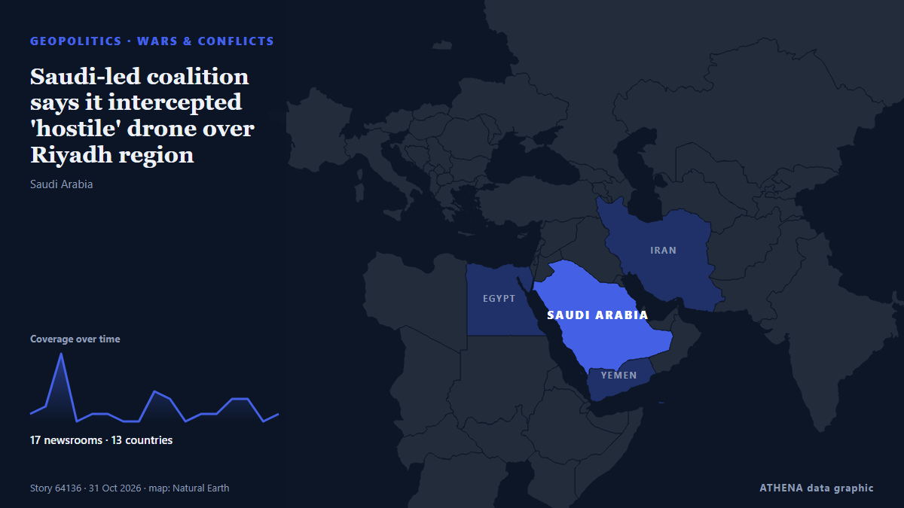

Saudi-led coalition says it intercepted 'hostile' drone over Riyadh region

Coalition spokesman says debris falls after interception but causes no casualties as authorities inspect site. από Anadolu Agency (English)
Αναφέρθηκε ανεξάρτητα από 17 μέσα σε 13 χώρες από τις 30 Οκτ, πρώτο από το Express Tribune· η κάλυψη εξασθενεί. Το ATHENA εκτιμά τον κίνδυνο μέτριο (3.3/10), κυρίως λόγω της σοβαρότητας της βλάβης που περιγράφεται και της γεωγραφικής και τομεακής εμβέλειάς του. Η βεβαιότητα είναι 91% (υψηλή), καθώς το επιβεβαιώνουν 17 ανεξάρτητα μέσα με μέση αξιοπιστία πηγών 79%. Ποιοι το ανέφεραν: 5 μέσα στη χώρα Τουρκία · Turkey, 4 μέσα στη χώρα Πακιστάν · Pakistan, 3 μέσα στη χώρα Σαουδική Αραβία · Saudi Arabia. Η κάλυψη διήρκεσε από 30 Οκτ έως 31 Οκτ, 32 ώρες.
Γιατί έχει σημασία: Η Ερυθρά Θάλασσα και τα στενά Μπαμπ ελ-Μαντέμπ είναι η συντομότερη θαλάσσια οδός Ασίας–Ευρώπης, μέσω της Διώρυγας του Σουέζ. Οι επιθέσεις σε εμπορικά πλοία αναγκάζουν τις εταιρείες να παρακάμπτουν την Αφρική, με κόστος χρόνου και χρημάτων για το παγκόσμιο εμπόριο και τη ναυτιλία.
Τι άλλαξε: 18 νέες αναφορές από 14 μέσα στο 24ωρο έως 31 Οκτ.
Πρώτη διατύπωση: Yemen's Houthis deny launching drone after coalition reports interception in Mecca region
Οι τίτλοι των ειδήσεων παρουσιάζονται στα αγγλικά, όπως δημοσιεύτηκαν.
Με μια ματιά
Επιλέγεται, βαθμολογείται και γράφεται από τη δημοσιευμένη μεθοδολογία του ATHENA. Κανένας συντάκτης δεν παρεμβαίνει σε μεμονωμένα γεγονότα. Πώς παράγεται ›
| 30 Oct 01:52 UTC | 1 |
|---|---|
| 30 Oct 03:52 UTC | 2 |
| 30 Oct 05:52 UTC | 9 |
| 30 Oct 07:52 UTC | 0 |
| 30 Oct 09:52 UTC | 1 |
| 30 Oct 11:52 UTC | 1 |
| 30 Oct 13:52 UTC | 0 |
| 30 Oct 15:52 UTC | 0 |
| 30 Oct 17:52 UTC | 4 |
| 30 Oct 19:52 UTC | 3 |
| 30 Oct 21:52 UTC | 0 |
| 30 Oct 23:52 UTC | 1 |
| 31 Oct 01:52 UTC | 1 |
| 31 Oct 03:52 UTC | 3 |
| 31 Oct 05:52 UTC | 3 |
| 31 Oct 07:52 UTC | 0 |
| 31 Oct 09:52 UTC | 1 |
| 30 Oct 06:41 UTC | 0.0 |
|---|---|
| 30 Oct 06:53 UTC | 1.2 |
| 30 Oct 07:34 UTC | 1.7 |
| 30 Oct 14:03 UTC | 2.4 |
| 31 Oct 06:12 UTC | 3.4 |
| 31 Oct 10:05 UTC | 3.3 |
Γιατί αυτοί οι αριθμοί
Σημασία
Κίνδυνος
Βεβαιότητα
Η κάλυψη — ποιος το ανέφερε και πότε
ο τίτλος όπως δημοσιεύτηκε · ανοίγει το πρωτότυπο- Express Tribune · Πακιστάν · PakistanSaudi-led coalition intercepts Houthi ballistic missile, drone near Riyadh
- Arab News · Σαουδική Αραβία · Saudi ArabiaSaudi-led coalition says intercepted Houthi drone in Makkah region
- Asharq Al-Awsat (English) · Σαουδική Αραβία · Saudi ArabiaCoalition Intercepts Houthi Drone over Makkah Region
- Anadolu Agency (English) · Τουρκία · TurkeySaudi-led coalition says it downed Houthi drone over Mecca region, while group denies involvement
- Middle East Eye · INTHouthis deny Saudi-led coalition claims of firing drone towards Mecca
- The Straits Times · Σιγκαπούρη · SingaporeYemen's Houthis deny launching drone after coalition reports interception in Mecca region
- Business Recorder · Πακιστάν · PakistanSaudi-led coalition says it destroyed drone fired by Yemen's Houthis over Makkah
- The Daily Star — page reader · Μπανγκλαντές · BangladeshSaudi coalition says intercepted Houthi drone in Makkah region
- Free Malaysia Today · Μαλαισία · MalaysiaHouthis deny launching drone intercepted in Mecca region
- Al-Monitor · Ηνωμένες Πολιτείες · United StatesYemen's Houthis deny launching drone after coalition reports interception in Mecca region
- News of Bahrain · Μπαχρέιν · BahrainSaudi Coalition Intercepts Houthi Drone in Makkah Region
- Middle East Eye · INTMorning update
- Kurdistan24 (English) · Ιράκ · IraqSaudi Arabia Says Houthi Missiles Intercepted Over Riyadh
- Anadolu Agency (English) · Τουρκία · TurkeySaudi Arabia declares danger over after emergency alert near Yemen border
- Asharq Al-Awsat (English) · Σαουδική Αραβία · Saudi ArabiaCoalition Downs 2 Drones Fired at Saudi Arabia
- NDTV · Ινδία · IndiaSaudi Coalition Says Intercepted Drone Over Riyadh, Missile In South
- Al-Monitor · Ηνωμένες Πολιτείες · United StatesSaudi-led coalition says it downs Houthi drone over Medina; Houthis deny attack
- Al-Monitor · Ηνωμένες Πολιτείες · United StatesSaudi-led coalition says it downs drone over oil-rich Eastern Region
- Anadolu Agency (English) · Τουρκία · TurkeySaudi-led coalition intercepts Houthi drone in Medina region
- The Straits Times · Σιγκαπούρη · SingaporeSaudi-led coalition says it downs Houthi drone over Medina; Houthis deny attack
- Middle East Eye · INTSaudi coalition reports drones over Mecca and Medina, Houthis deny both
- Express Tribune · Πακιστάν · PakistanSaudi-led coalition intercepts drones in multiple areas of kingdom
- Oman Observer · Ομάν · OmanSaudi says intercepted 'hostile drone' in Riyadh
- Khaama Press · Αφγανιστάν · AfghanistanSaudi-Led Coalition Intercepts Houthi Drones Over Eastern and Southern Saudi Arabia
- Anadolu Agency (English) · Τουρκία · TurkeySaudi-led coalition intercepts Houthi drone over southern region
- Business Recorder · Πακιστάν · PakistanSaudi-led coalition says it downs drone over oil-rich Eastern Region
- Anadolu Agency (English) · Τουρκία · TurkeySaudi-led coalition says it intercepted 'hostile' drone over Riyadh region
- Free Malaysia Today · Μαλαισία · MalaysiaSaudi says intercepted ‘hostile drone’ in Riyadh region
- The Daily Star — page reader · Μπανγκλαντές · BangladeshSaudi says intercepted 'hostile drone' in Riyadh region
- The New Arab · INTIran warns US against new escalation, drones target Saudi Arabia